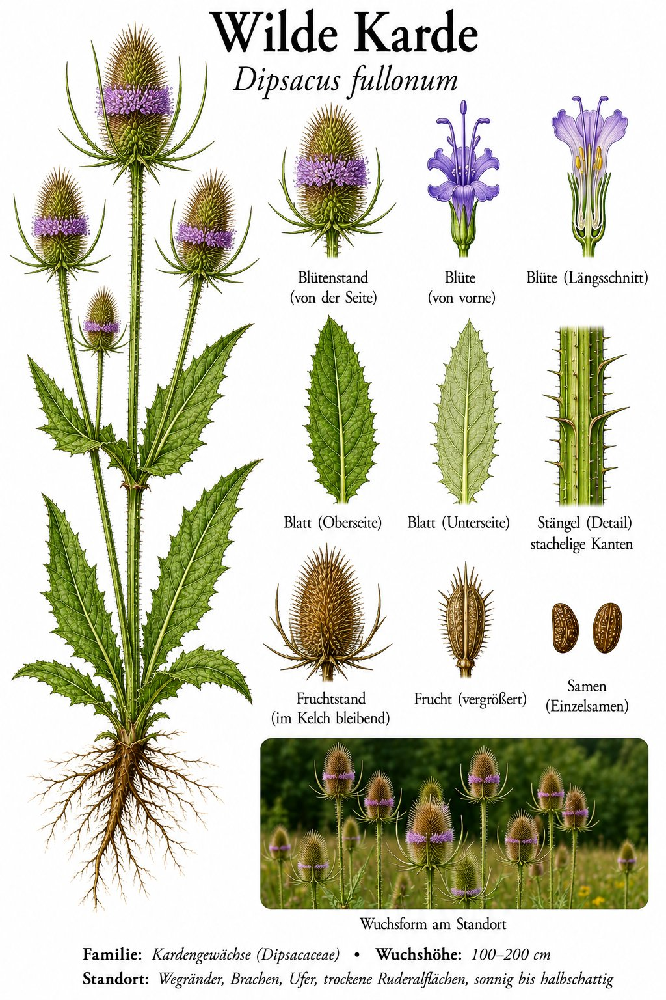
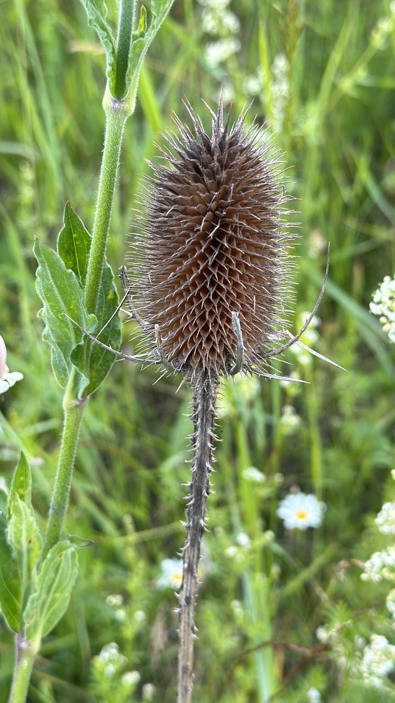

Stachelritter der Brachflächen — mit eingebautem Vogeltränke-Pool.


Der wandernde Blütenring
Auf dem stacheligen, eiförmigen Blütenkopf erscheinen die kleinen violetten Blüten zuerst als Gürtel in der Mitte — dann wandert der Blühring gleichzeitig nach oben und nach unten auseinander. Bis zu zwei Meter ragt die dornige Pflanze über die Brache. Im Winter bleiben die vertrockneten Köpfe als markante Silhouetten stehen.
Pflanze mit eigenem Schwimmbad
Die gegenständigen Blätter verwachsen am Stängel zu kleinen Becken, in denen sich Regenwasser sammelt. Manche Forscher vermuten, die Karde verwerte ertrunkene Insekten daraus zum Teil selbst — eine halbe Fleischfresserin. Sicher ist: Vögel nutzen die Becken als Tränke, und Distelfinken lieben später die Samen.
Wissenswertes & Merksätze
Erkennungszeichen
Bis 2 m hoch, Stängel und Hochblätter stachelig; großer, eiförmiger Blütenkopf mit langen, gebogenen Hüllstacheln; die Blattpaare am Stängel becherartig verwachsen.
Werkzeug der Tuchmacher
Eine Zuchtform, die Weber-Karde, trägt hakige Spreublätter und wurde jahrhundertelang zum „Aufrauen“ von Wollstoffen benutzt. Ganze Walzen voller Kardenköpfe kämmten den Flausch ins Tuch — eine Pflanze als Industriewerkzeug.